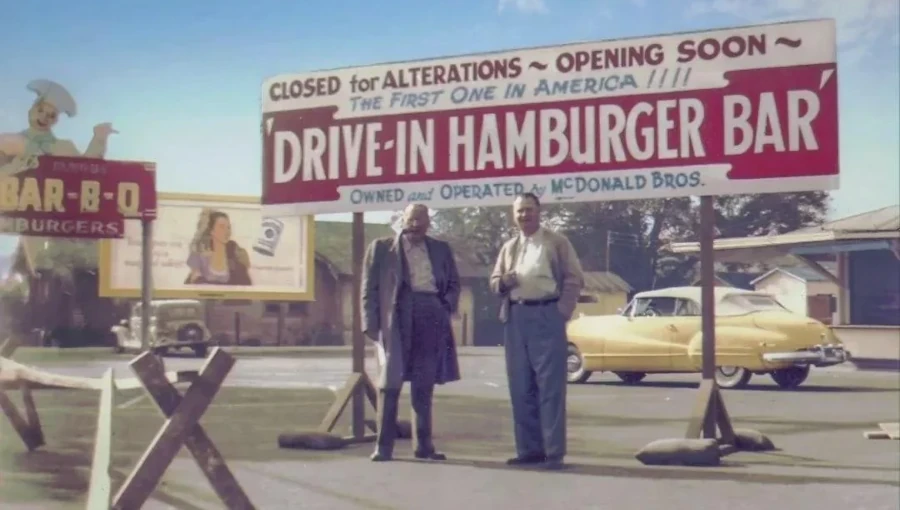

Do Início Simples ao Gigante Global
Os irmãos McDonald
Dick e Mac McDonald partiram para a Califórnia em busca de novas oportunidades que não encontraram na Nova Inglaterra. Começando no ramo cinematográfico e infelizmente (ou felizmente) não conseguiram, posteriormente investiram no ramo de restaurantes drive-in.Em 1948, eles se arriscaram ao otimizar suas operações e introduziram o Sistema de Serviço Speedee, onde cliente recebia seu pedido no balcão e quase instantaneamente, com hambúrgueres de 15 centavos. Com o sucesso levou eles a franquear seu conceito SSS. Em San Bernadinho Dick e Mac aperfeiçoaram o SSS, com acrescimo de milk-shakes e batatas fritas.
